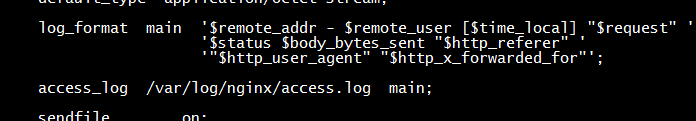
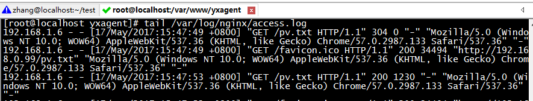

转载自：https://www.jianshu.com/p/537a0bddda94
叙述
PV（Page View）：即页面浏览量或者点击量，用户每一次对网站中每个页面访问均记录1个PV。用户对同一页面的多次访问，访问量累积。
UV（Unique Visitor）：指通过互联网浏览这个网页的人，电脑称为一个访客、手机也称为一个访客，一天之内相同的客户端只能被计算一次。
IP（Internet Protocol）：指独立IP访问站点的IP总数，一天内相同IP只能算一次。
VV（Visit View）：指所有访客一天内访问网站的次数，当访客完成所有浏览并最终关闭网站的所有页面时变完成了一次访问，同一访客一天内可能有多次访问行为，访问次数累积。
解决方案
Nginx的配置文件

access.log

access.log文件里面的$1、$2...对应于nginx配置文件里面的$remote_addr、$remote_user...等
查看各个访问量
1.根据访问IP统计UV
awk '{print $1}' /var/log/nginx/access.log|sort | uniq -c |wc -l2.统计访问URL统计PV
awk '{print $7}' /var/log/nginx/access.log|wc -l3.查询访问最频繁的URL
awk '{print $7}' /var/log/nginx/access.log|sort | uniq -c |sort -n -k 1 -r|more4.查询访问最频繁的IP
awk '{print $1}' /var/log/nginx/access.log|sort | uniq -c |sort -n -k 1 -r|more5.根据时间段统计查看日志
cat /var/log/nginx/access.log| sed -n '/14\/Mar\/2017:21/,/14\/Mar\/2017:22/p'|more针对每天的访问信息写一个脚本，并将统计信息输出到/pv.html文件里面，之保留30天的信息。方便直接浏览此页面查看，但要限制特定IP才能访问此页面，其他IP的403!
- year=`date +%Y`
-
- month=`date +%m`
-
- datedate=`date +%F`
-
- date=`date +%Y%m%d`
-
- pv=`awk '{print $7}' /xx/logs/nginx/xxx/"$year"/"$month"/"$datedate"-access.log | wc -l`
-
- ip=`awk '{print $1}' /xx/logs/nginx/xxx/"$year"/"$month"/"$datedate"-access.log | sort -n | uniq -c | wc -l`
-
- echo -e "\n$date Pv is $pv;; $date Ip is $ip.." >> /xx/xxx/pv.htm l sort -rn /xx/xxx/pv.html | sed -i '31d' /xx/xxx/pv.html | sort -r
此外还要修改nginx配置文件
- location = /pv.html {
-
- allow xxx.xxx.xxx.xxx;
-
- deny allow;
-
- }
- nginx -r
-
- dervice nginx reload
最后，将pv.sh加入定时任务
crontab -e


![]()


 4811
4811